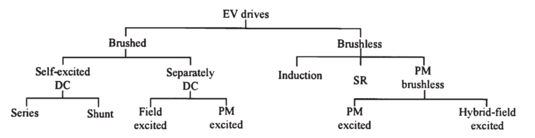
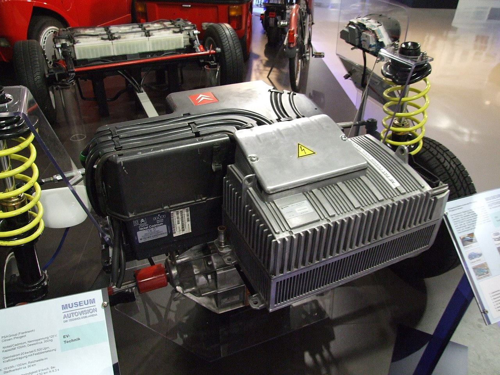
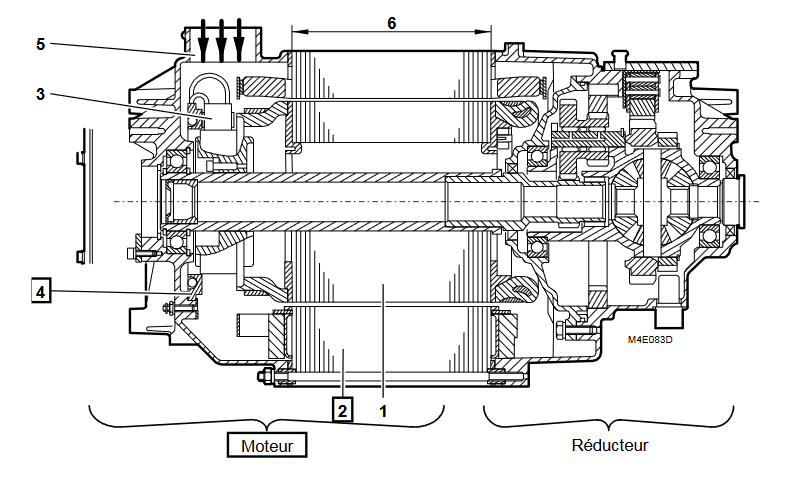
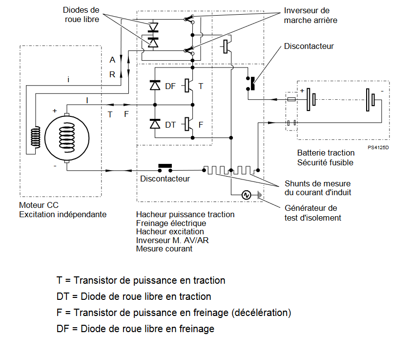
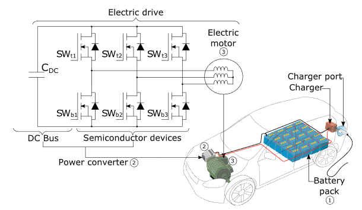
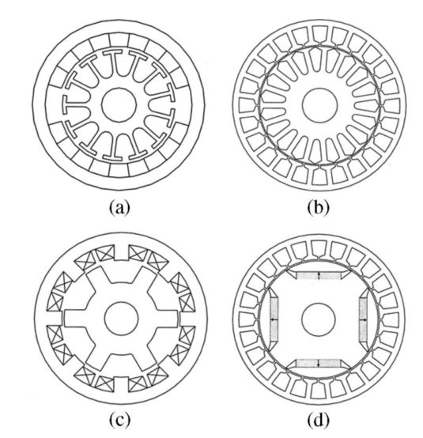

Motorisation : panorama#
Classification des motorisations de véhicules électriques#
Les motorisations électriques pour voitures se classent en quatre grandes catégories :
Moteurs à courant continu (DC) : Historiques, comme les moteurs à balais à aimants ou à excitation. Simples à contrôler, mais moins efficaces et nécessitant un entretien régulier.
Moteurs synchrones à aimants permanents (PMSM) : Très répandus, offrant un haut rendement et un couple élevé, mais coûteux en raison des aimants.
Moteurs asynchrones (induction) : Robustes, sans aimants, moins coûteux, et utilisés dans des véhicules comme les premières Tesla.
Moteurs synchrones à reluctance commutée : Prometteurs, sans aimants, efficaces et durables, mais encore émergents.
Figure - Classification des moteurs de véhicules électriques [Chau, 2008] 
Moteurs à courant continu#
Bien que les moteurs à courant continu à balais soient aujourd’hui largement remplacés par des moteurs synchrones à aimants permanents ou des moteurs asynchrones, ils ont joué un rôle important dans les premières applications de la propulsion électrique. Dans les années 1990, certaines premières versions de véhicules électriques, comme les premiers prototypes de la GM EV1, la Berlingo ou la peugeot 106 ont utilisé des moteurs à courant continu à balais. Ces moteurs présentaient plusieurs avantages pour cette époque :
Simplicité de contrôle : Les moteurs à courant continu sont faciles à contrôler grâce à des variateurs relativement simples.
Couple élevé à basse vitesse : Le couple maximal est disponible dès le démarrage, ce qui est idéal pour les applications automobiles.
Technologie bien maîtrisée : À l’époque, les moteurs à courant continu étaient largement utilisés dans l’industrie, ce qui réduisait les coûts et les risques techniques.
Cependant, ces moteurs avaient aussi des inconvénients notables :
Usure des balais : Les balais nécessitent un entretien régulier et limitent la durée de vie du moteur.
Rendement limité : Les pertes dues aux frottements des balais et la dissipation thermique dans le collecteur rendent ces moteurs moins efficaces.
Dimensions et poids : Par rapport aux moteurs modernes, ils étaient plus volumineux pour une même puissance.
Groupe de propulsion électrique PSA 
Groupe de propulsion électrique PSA : 20 kW à 5 500 tr/min, moteur à courant continu SA13 de Leroy-Somer, permettant une vitesse de 91 km/h, avec un ratio fixe ; En arrière en haut: accumulateur nickel-cadmium de Saft : capacité 100 ampères-heures, 120 volts, 300 kg ; durable et résistant au froid. Au devant, bloc électronique Sagem pilotant le moteur, la gestion des charges normales via un chargeur embarqué de 3 kW ou rapides via une station externe (20 min à 130 A). Pour Peugeot 106, Citroën Saxo (les deux best-sellers), Citroën AX, Citroën Berlingo et Peugeot Partner (moteur SA18 de Leroy-Somer), soit un total de plus de 10 000 exemplaires.
Moteur et variateur du Berlingo Electrique  
Question: La Citroën Berlingo Electrique était équipée d’un moteur à courant continu à excitation séparée. Expliquer l’intérêt de cette configuration.
Moteurs synchrones#
LUn moteur synchrone à aimants permanents (PMSM) est constitué d’un rotor équipé d’aimants permanents et d’un stator comportant des bobinages alimentés par un courant triphasé. Le champ magnétique des aimants interagit avec celui généré par le stator pour produire un couple de rotation. Il est alimenté par un onduleur triphasé.
Principaux avantages :
Haut rendement : Faibles pertes électriques grâce à l’absence de courant induit dans le rotor.
Couple élevé : Disponible dès le démarrage, idéal pour les véhicules électriques.
Compacité : Une densité de puissance élevée permet de réduire le poids et l’encombrement.
Maintenance réduite : Pas de balais ni de collecteurs à usure rapide.
C’est la technologie dominante dans les voitures modernes.
Principaux composants d’une motorisation de voiture moderne [Matallana, 2019] 
Moteurs asynchrones#
Un moteur asynchrone (ou à induction) est constitué d’un stator avec des bobinages alimentés par un courant alternatif triphasé et d’un rotor en cage d’écureuil (barres conductrices entourées de courts-circuits). Le champ magnétique tournant du stator induit des courants dans le rotor, générant un couple de rotation.
Principaux avantages :
Robustesse : Absence d’aimants ou de balais, réduisant les risques de défaillance.
Coût modéré : Pas de terres rares, contrairement aux moteurs à aimants permanents.
Fiabilité : Résistant aux variations de température et aux environnements difficiles.
Simplicité de construction : Facilité de fabrication et d’entretien.
Ces moteurs sont souvent utilisés pour leur durabilité, comme sur les premières Tesla.
Topologie des différents technologies de moteurs#
Questions: La figure ci-dessous représente les principales topologies de moteurs électriques pour véhicules électrique (Moteurs à courant continu (DC), Moteurs synchrones à aimants permanents (PMSM), Moteurs asynchrones (induction), Moteurs synchrones à reluctance). Indiquer leur type, la nature et la position des matériaux utilisés (aimants permanents, tôles en fer magnétique, bobinages en fils de cuivre, barre conductrice en cuivre ou aluminum), leur principe d’alimentation.
Figure - Principales topologies des moteurs de voitures électriques [Chau, 2008] 
Références#
[Chau, 2008] Chau, K. T., Chan, C. C., & Liu, C. (2008). Overview of permanent-magnet brushless drives for electric and hybrid electric vehicles. IEEE Transactions on industrial electronics, 55(6), 2246-2257. Link
[Matallana, 2019] Matallana, A., Ibarra, E., López, I., Andreu, J., Garate, J. I., Jordà, X., & Rebollo, J. (2019). Power module electronics in HEV/EV applications: New trends in wide-bandgap semiconductor technologies and design aspects. Renewable and Sustainable Energy Reviews, 113, 109264. Link